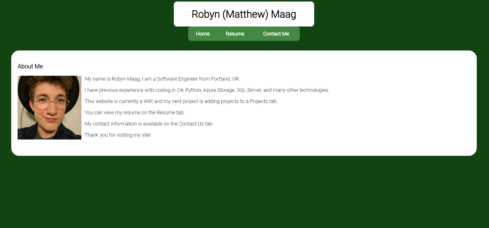
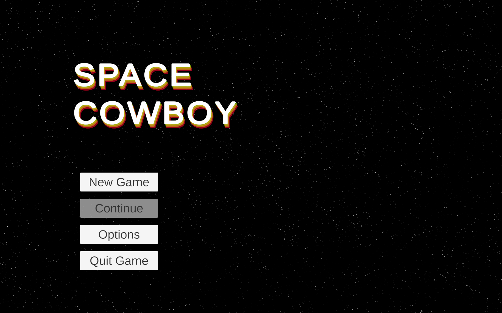
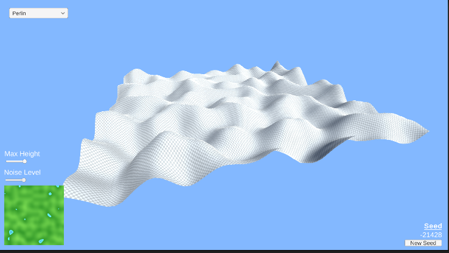

This Website!

- This website was designed entirely by me!
- This website was developed with basic HTML5, CSS for styling, and Javascript for the scripting
- I host this website on Azure Blob Storage, using the Static Website function.
Repository
Space Cowboy

- Top down space shooter made in Unity
- Players shoot waves of enemies and collect an ever growing bounty for each wave they defeat
- Barebones pre-alpha build available for download here
Download v0.0.1
Repository
Terrain Generator

- I wanted to learn more about how noise works, so I created this terrain generator.
- Has the options between different types of noise, either Perlin, White, or a Noise type I created.
- You can download it here
Download
Repository
Note:
This is not a comprehensive list of all of my projects, however most of my work has been at companies I've worked at, so I cannot publicly advertise it